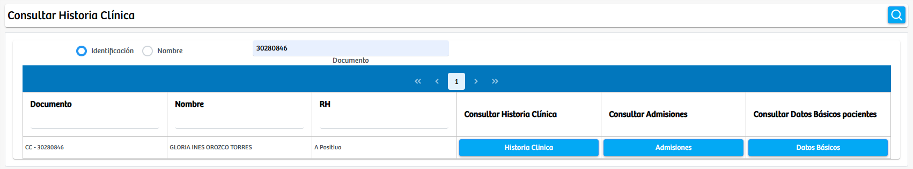

Modulos Sas-Web
Funcionalidades
Consultar Historia Clinica
Este modulo es el segundo de todo nuestro aplicativo, inicialmente en este podemos encontrar 2 checkbox que guiaran la búsqueda por “Identificación” o “Nombre”. A la par se encuentra un campo de texto para llevar a cabo la búsqueda. Abajo de todo esto existe una tabla la cual nos traerá: Documento, Nombre, RH, Historia Clínica, Admisiones y los datos básicos del usuario que queramos encontrar para ser usados en lo que se requiera.
